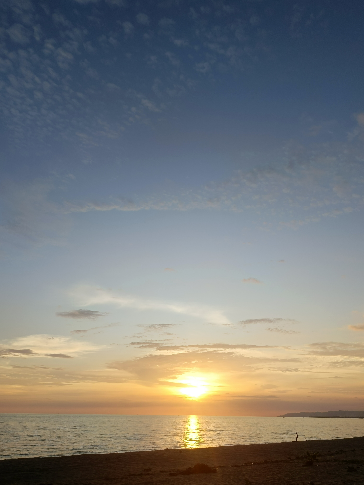
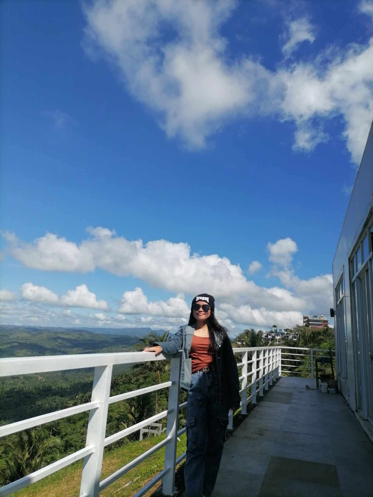
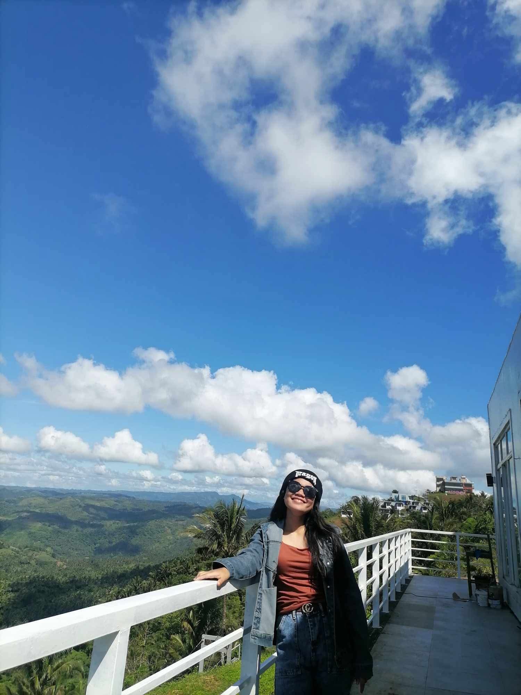
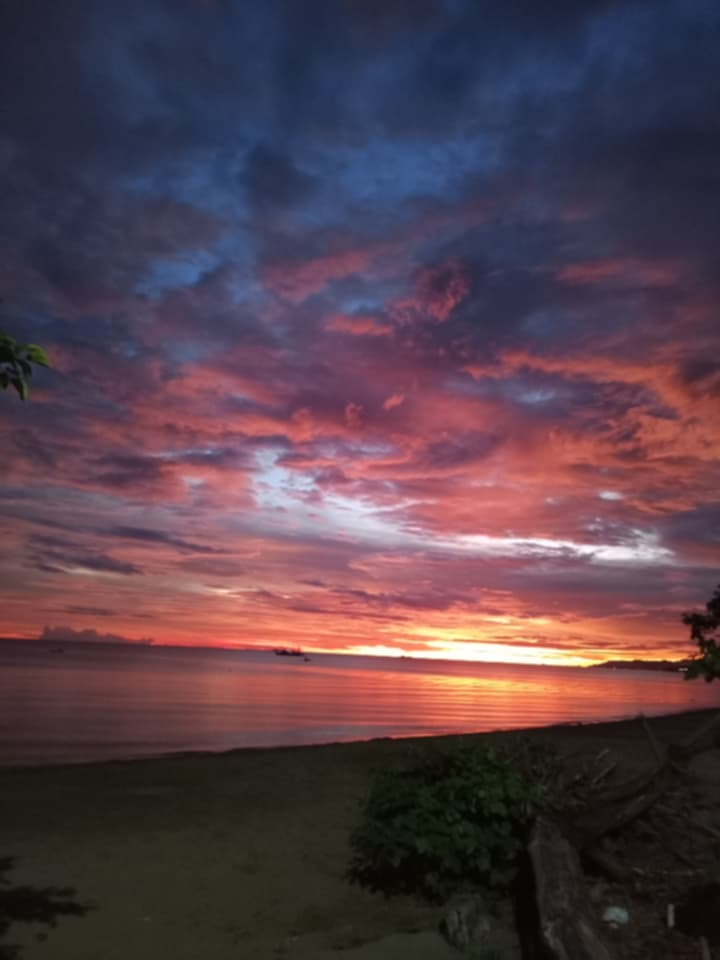
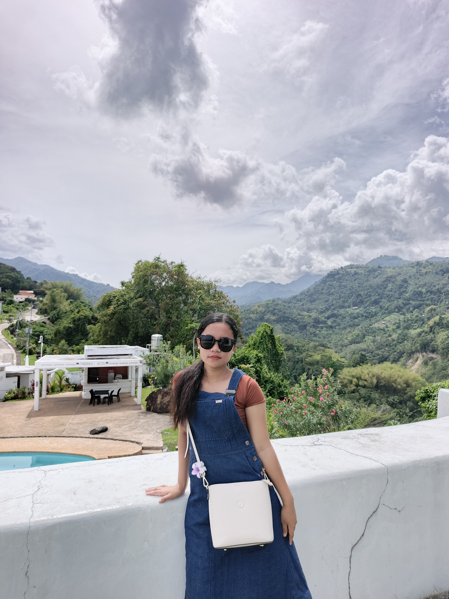
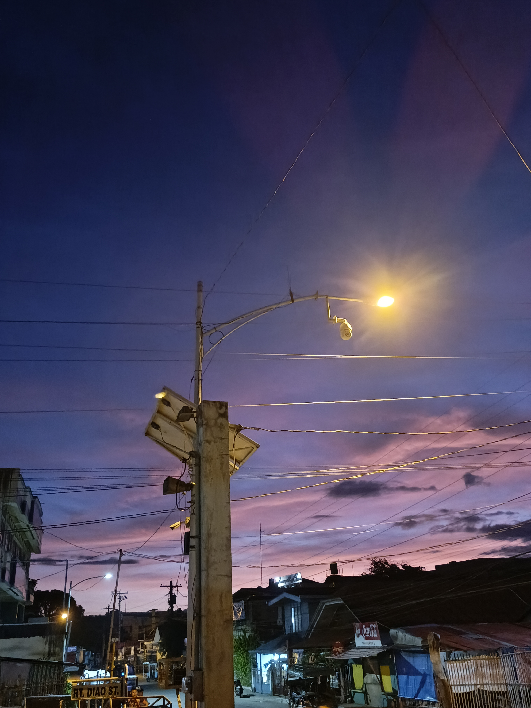

Projects
Here are some of my recent works:








Aspiring Photographer & Creative Designer
Hello! I’m Sara Missy, an aspiring photographer and creative designer. Explore my portfolio to see my work and passion for visual storytelling.
I’m passionate about capturing stories through photography and designing visuals that inspire. With a creative eye and love for detail, I aim to create unique and meaningful projects that leave an impression.
Here are some of my recent works:
Email: saramissy@example.com
Instagram: @saramissy